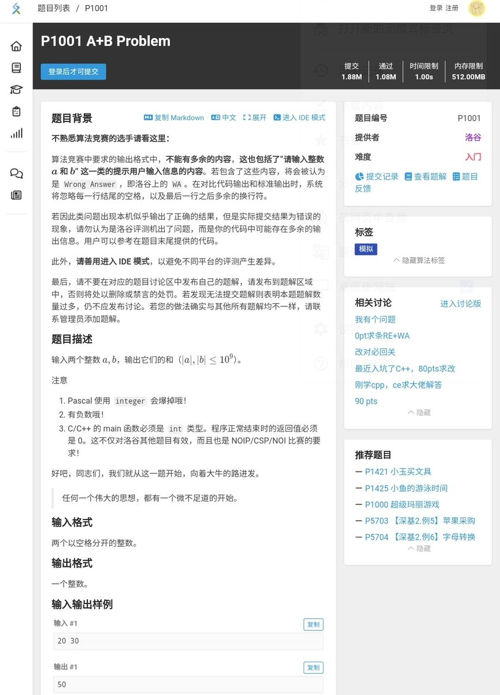

Winit420
@winterfruit_1
@SalviaSWC 有人懂这个网盘吗。

鼠尾草～🌿
@SalviaSWC
厌蠢症犯了，新增一条规矩就是加我之前，我通过之后我会找一些OI题(而且是红色难度的)你们必须AC了才配跟我讲话
我是感觉就是没有接受过义务教育和系统性的学习，真的认知不同啊
不要强融 ，我说话，你说我讲的跟天书一样，你们说话就简单明了一个不知道那我们还是别相处了
我不是很喜欢弱智，有点厌蠢 https://t.co/NnJ5kQT7a4